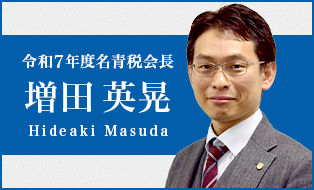
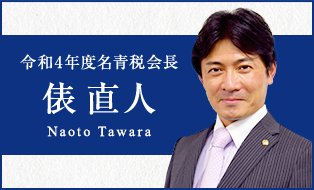
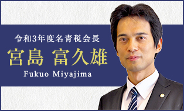
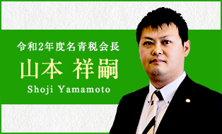
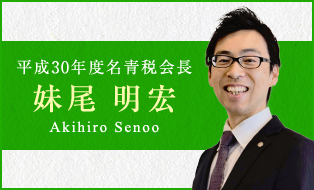
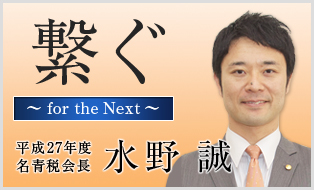

Past Presidents' Messages
歴代会長挨拶
名古屋青年税理士連盟の歴史を築き上げてきた歴代会長からのメッセージをご紹介します。 それぞれの時代における挑戦と想いが、今の私たちに受け継がれています。

2025年度 (第59代)
増田 英晃
60周年へのバトンを繋いで
2024年度 (第58代)
池田 大志
58年の歴史に感謝を込めて
2023年度 (第57代)
木下 晃良
新たな時代の研鑽を求めて

2022年度 (第56代)
俵 直人
困難を乗り越え、前へ

2021年度 (第55代)
宮島 富久雄
逆境の中でも学びを止めない

2020年度 (第54代)
山本 祥嗣
独立から名青税、そして会長へ

2019年度 (第53代)
安藤 宣貴
対外発信と地域貢献の充実

2018年度 (第52代)
妹尾 明宏
自由に挑戦できる場所
2017年度 (第51代)
太田 麻紀
Chance, Challenge, Change
2016年度 (第50代)
仙田 浩人
自分の想いを伝えよう

2015年度 (第49代)